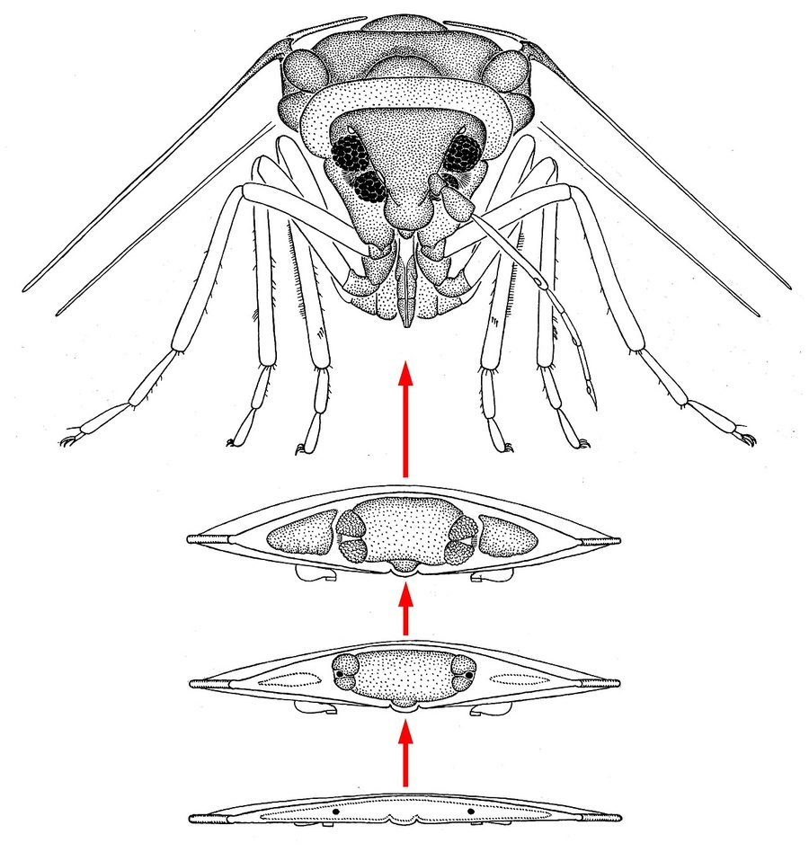

Big Questions
Abstract
Do you think humans are the only ones that can make smart choices? We tested whether the tiny larvae of mealworms can make decisions based on what they learn. First, we trained the larvae to find their preferred food in one of two branches of a maze. Then, outside the maze, the larvae were fed the same food after it had been made bitter and therefore unpleasant. How did the hungry larvae behave when they returned to the maze? Did they choose the branch where they had originally learned they could find their preferred food, or did they stop doing so because that food was no longer desirable? Mealworms are becoming an important sustainable food source, but if these tiny larvae are capable of making decisions to meet their goals, what might this tell us about the minds of even the smallest animals?
What Does it Mean to Act “On Purpose”?
Imagine that two friends, Alex and Jamie, both love strawberry candy. One day, they eat some strawberry candy at home. Later, they eat another at the playground: Alex takes one that looks and smells exactly like the ones he ate before, but this time it tastes bitter! The candy Jamie chooses tastes bitter as well. The next time Alex sees a strawberry candy, he decides not to eat it. Jamie, however, keeps eating strawberry candies whenever possible. Alex changed his behavior because he learned that the candy was no longer worth eating.
Every day, we think about what could happen before we act and, in some cases, we change our actions based on those thoughts. This kind of flexible decision-making is called goal-directed behavior. A behavior is goal-directed when person connects an action with its result and changes what it does when that result is no longer something it wants.
But what about animals? Do they also show goal-directed behaviors? Goal-directed behaviors are different from habits or reflexes in two main ways [1]. First, the animal must understand that its actions have consequences, which is called the cause–effect principle. Second, the result or consequence must be something the animal wants to achieve—a goal. So, animals act “on purpose” when they know the consequences of their actions, and take actions to achieve the consequences they desire.
How do Scientists Test Whether Animals Act on Purpose?
Several years ago, scientists tested this idea with rats using an experiment called the outcome-devaluation test [2]. First, the rats learned to press a lever (action) to get tasty food (consequence). Then, the food was changed so that it made the rats feel sick. This phase is called reward devaluation. When the unpleasant food was given to the rats, they did not have the lever available. This means that they could not connect pressing the lever with feeling sick.
Later, when given the lever again, the rats had to decide whether to press the lever or not. The rats avoided pressing the lever, which showed that they remembered two things: pressing the lever gives them food, and the food now makes them sick. So, they avoided the lever. This means that rats can change their behavior based on how valuable the reward is, just as Alex did with the strawberry candy.
Are vertebrates or mammals (such as Alex, Jamie, and the rats) the only ones capable of such flexible choices?
Meet the Mealworm
Mealworms are the young stage (larvae) of a beetle (Figure 1A). They are very easy to raise, so scientists keep them in simple containers filled with grains such as wheat bran, which is like a dry cereal powder. To give them water and extra nutrients, small pieces of fruits or vegetables (such as apples or carrots) are added.
Mealworms are often used as food for pets and fish, and sometimes even as a food for people because they are high in protein. People may think mealworms are pests, especially when it comes to food storage. Mealworms are also used in biological and medical research.
Did you know that mealworm beetles can “count” small numbers of individuals? Male beetles were shown to adjust their behavior depending on how many other beetles were present: when more rivals were around, they changed how they behaved during mating situations. This showed that they can compare group sizes and use this information to guide their actions [3]. This does not mean beetles “count” like humans do, but it shows that even this insect can notice differences in quantity and use this information in important situations, such as finding mates or competing for resources.
Even as larvae, mealworms can learn and remember things, and these memories last as they grow into adults. This means that what they experience early in life is not immediately forgotten during metamorphosis, but can influence their later behavior after they become beetles.
Lately, scientists have also been looking at mealworms as food for people [4]. Since they are packed with protein, they could be used as a healthy alternative to meat.
Mealworm Larvae Act, Not Only React
We adapted the outcome-devaluation test used on rats to study whether mealworms could also make choices to change their behavior (Figure 1B).
How we did so is shown in Figure 2. First, in the training phase, we trained larvae to move toward food (apple) in one branch of a Y-shaped maze (called the target branch; Figure 2A). One larva at a time was placed the Y-maze, and this was repeated five times so the larva could explore it and learn where to find the apple.
Second, in the devaluation phase, we gave the larvae an unpleasant food experience by feeding them bitter food. For half of them (the experimental group), the bitter food was the same food they had searched for in the previous phase, whereas for the other half (the control group), it was a different food. In both cases, the food was made bitter by adding lemon juice.
Third, in the test phase, we placed the larvae back in the maze to see whether having tasted the bitter food changed their behavior. We recorded their choices five times. Note that, this time, there was no food in either branch; this is the correct way to test how animals make choices based only on what they have learned during training.
We found that the larvae in the experimental group avoided the branch associated with the now-bitter food. The control group, instead, continued to visit the same branch in the maze (Figure 3). By the end of this step, all larvae stopped visiting the target branch since neither group found food there. The most important finding was that the larvae stopped looking for the food that had become bitter. It seemed that they understood that eating it would not be pleasant anymore. Because of this, they changed their behavior, as if they could predict what would happen after making that choice.
Why Our Results Matter
We showed that mealworms can make flexible decisions, not just react to their environments. For example, animals sometimes face trade-off situations, like a bird deciding whether to eat in a risky open field or stay safe in the nest but go hungry. In such situations, the animal must weigh different needs, such as hunger and safety, before choosing what to do [5]. Seeing decision-making behavior in larvae suggests they are smarter than we thought. Maybe it should make us think differently about how we treat them.
Rethinking Mealworm Policies for the Future
Mealworms are studied mostly as food, but understanding their behavior is important. As “Smart Snacks”, they provide a sustainable source of protein and may be a promising solution to global food challenges [4]. However, if they show signs of complex mental life and experience stress, how they are raised could affect both their welfare and their quality as food or animal feed.
Currently, in Europe, only vertebrates and cephalopods (a group of sea animals, including octopuses, squids, and cuttlefish) are protected by specific laws regulating the experiments that can be done with them—insects such as mealworms are not. If mealworms are shown to be capable of more complex behaviors, new rules may be needed to ensure these “tiny thinkers” are treated ethically [6].
Our findings do not show that mealworms deserve special treatment compared with other insects. Rather, they add to growing evidence that even small invertebrates can display flexible, goal-directed behavior. As scientists learn more about insect cognition, these discoveries may help shape future discussions about research practices, farming methods, and animal welfare. Understanding how these animals think is an important first step toward making informed decisions about how we use and care for them.
What Should Scientists Study Next?
Our results raise many new questions. Can mealworms make similar choices about things other than food? How long can they remember that a reward has changed? Do other insects show the same abilities? And can mealworms choose between different needs, such as finding food or staying safe? Scientists often discover that answering one question leads to many more. What question would you ask next?
Glossary
Habit: ↑ A repeated behavior that becomes automatic over time with practice, often triggered by a specific stimulus, context, or situation.
Reflex: ↑ A quick, automatic action that happens without deciding to do it, such as blinking when something moves toward your eye.
Cause–effect Principle: ↑ The understanding that doing one thing (the cause) leads to another thing happening (the effect), like pressing a button to get food.
Devaluation: ↑ Making something (usually a reward) less appealing or valuable, like turning yummy food into something bitter.
Metamorphosis: ↑ A big change in an animal’s body as it grows, like a caterpillar changing into a butterfly.
Invertebrates: ↑ Animals that do not have backbones. Most animal species on Earth are invertebrates, including mealworms.
Cognition: ↑ The brain processes that allow people and animals to learn, remember, understand, and make sense of the world around them.
Conflict of Interest
The author(s) declared that this work was conducted in the absence of any commercial or financial relationships that could be construed as a potential conflict of interest.
Acknowledgments
We thank Prof. Anthony Dickinson for comments on a preliminary version of the manuscript and traineeship Corinna Moscardi for suggestions for the drawing of images.
AI Tool Statement
The author(s) declared that Generative AI was used in the creation of this manuscript. Authors made use of generative AI tools (Gemini) to assist in the creation of parts of the revised figures. The AI-generated elements were used exclusively for graphical purposes to improve the clarity and presentation of the illustrations. All scientific content, interpretation, and final editing of the figures were conceived, verified, and approved by the author(s), who take full responsibility for their accuracy and compliance with the journal’s policies.
Any alternative text (alt text) provided alongside figures in this article has been generated by Frontiers with the support of artificial intelligence and reasonable efforts have been made to ensure accuracy, including review by the authors wherever possible. If you identify any issues, please contact us.
Original Source Article
↑Dissegna, A., Turatto, M. and Chiandetti, C. 2024. Goal-directed behavior in Tenebrio molitor larvae. Sci. Rep. 14:21706. doi: 10.1038/s41598-024-72455-3
References
[1] ↑ Gómez, J.-C. 2022. “Intentionality”, in Encyclopedia of Animal Cognition and Behavior, eds J. Vonk, and T. K. Shackelford (Cham: Springer), 3614–22. doi: 10.1007/978-3-319-55065-7_1678
[2] ↑ Adams, C. D., and Dickinson, A. 1981. Instrumental responding following reinforcer devaluation. Q. J. Exp. Psychol. Sect. B 33:109–21. doi: 10.1080/14640748108400816
[3] ↑ Carazo, P., Fernández-Perea, R., and Font, E. 2012. Quantity estimation based on numerical cues in the mealworm beetle (Tenebrio molitor). Front. Psychol. 3:502. doi: 10.3389/fpsyg.2012.00502
[4] ↑ Lange, K. W., and Nakamura, Y. 2021. Edible insects as future food: chances and challenges. J. Future Food. 1:38–46. doi: 10.1016/j.jfutfo.2021.10.001
[5] ↑ Burns Brown, S. A., and Birch, J. 2025. When and why are motivational trade-offs evidence of sentience? Philos. Trans. R. Soc. B Biol. Sci. 380:20240309. doi: 10.1098/rstb.2024.0309
[6] ↑ Barrett, M., Godfrey, R.K., Schnell, A., and Fischer, B. 2023. Farmed yellow mealworm (Tenebrio molitor; Coleoptera: Tenebrionidae) welfare: species-specific recommendations for a global industry. J. Insects Food Feed 10:903–48. doi: 10.1163/23524588-20230104
Originally published in Frontiers for Young Minds: Chiandetti C, Dissegna A and Turatto M (2026) Can An Insect Larva Change Its Mind?. Front. Young Minds. 14:1681331. doi: 10.3389/frym.2026.1681331 Republished under CC BY 4.0. Changes: figures and glossary pop-ups removed, formatting adjusted. Read the original with its figures.